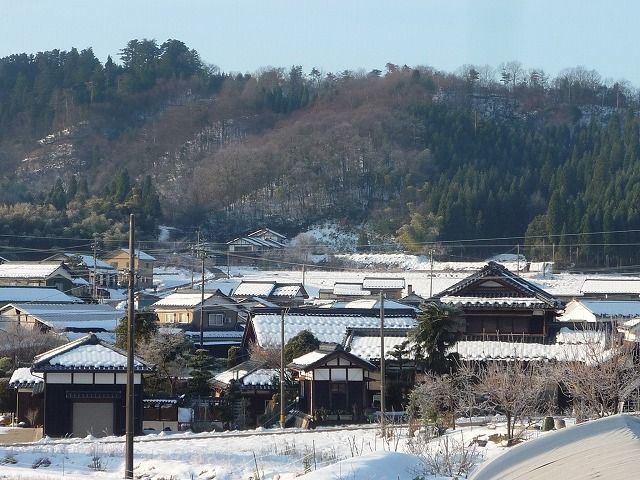
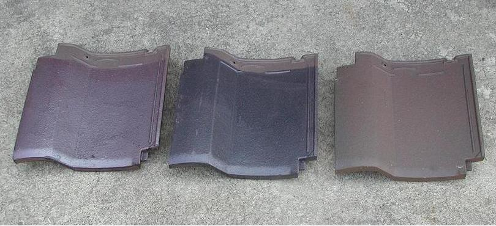

に ： 似合う瓦は越前瓦 和風洋風どちらでも
一言でいうと？
丈夫で長持ちする越前産の粘土瓦

寒い場所に強くて丈夫(じょうぶ)な瓦として知られる「越前瓦」。雪が多い北陸地方でも安心な屋根素材として人気があります。
神山地区に多く工場が立ち並び、福井県の地域ブランドにも認定されています。
特徴は？
凍らない、割れない、あきない！
★特徴１ どんな寒い土地でも凍らない
1200℃前後の高温での還元焼成(かんげんしょうせい・酸素が足りない状態で焼く焼き方)で、吸水率が低く、耐寒性の瓦として寒い土地・雪の降る土地にピッタリの瓦です。
★特徴２ 割れにくく長持ち
高温での還元焼成により、焼き締まり、硬く、滑りにくい、除雪器具などによる衝撃(しょうげき)に強い瓦です。
★特徴３ あきのこない優雅な銀鼠(ぎんねず)色
鉄結晶の落着いた色調を活かしているので、和風の家はもちろん、洋風の家にも美しく調和します。

実家の瓦も越前瓦です。最近は洋風の家でも瓦を使用しているところもあって、見かけるたびに「おしゃれだなぁ」って感じています。打刃物や和紙と比べると幾分かマイナーなイメージがあるので、もっと広まってほしいと思っています！